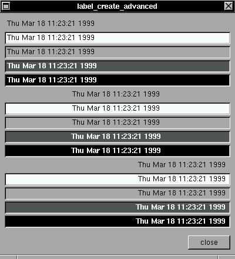

The XSTEP labels have many combinations of text positions and colors, in future versions this table will be displayed like the Motif Periodic Table of Widgets :)Of course, the available source:
#include <xstep.h> char text[256]; int timestamp; void function(struct xtree *t) { if(timestamp==time(0)) return; timestamp=time(0); strcpy(text,ctime((time_t *)×tamp)); broadcast++; } void xmain(int n,char *p[]) { animate=1; window_create(0,0,400,16+14*24+21+40-3,"label_create_advanced"); treestk->broadcast=function; label_create(8,8+0*24,-8,21,text,invisible, left); label_create(8,8+1*24,-8,21,text,white, left); label_create(8,8+2*24,-8,21,text,gray, left); label_create(8,8+3*24,-8,21,text,darkgray, left); label_create(8,8+4*24,-8,21,text,black, left); label_create(8,8+5*24,-8,21,text,invisible, center); label_create(8,8+6*24,-8,21,text,white, center); label_create(8,8+7*24,-8,21,text,gray, center); label_create(8,8+8*24,-8,21,text,darkgray, center); label_create(8,8+9*24,-8,21,text,black, center); label_create(8,8+10*24,-8,21,text,invisible, right); label_create(8,8+11*24,-8,21,text,white, right); label_create(8,8+12*24,-8,21,text,gray, right); label_create(8,8+13*24,-8,21,text,darkgray, right); label_create(8,8+14*24,-8,21,text,black, right); button_create(-8,-8,72,24,"close",window_close); }